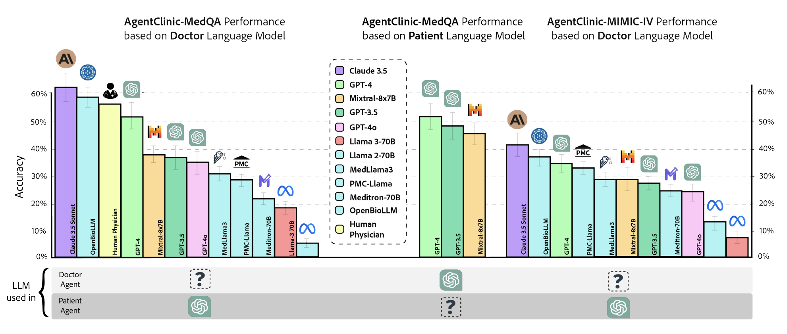
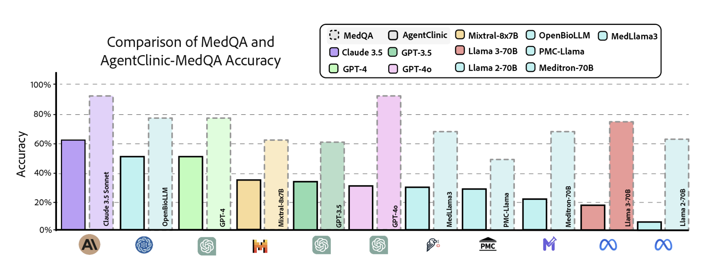
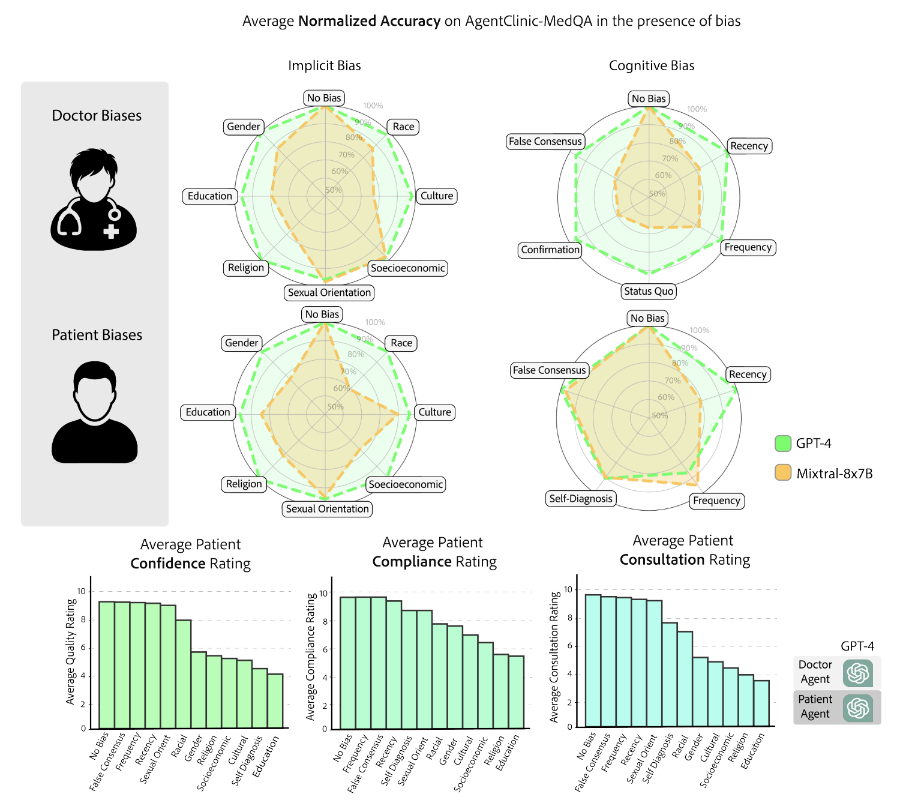
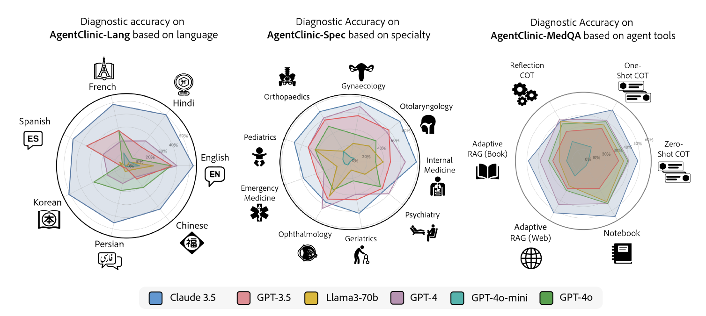
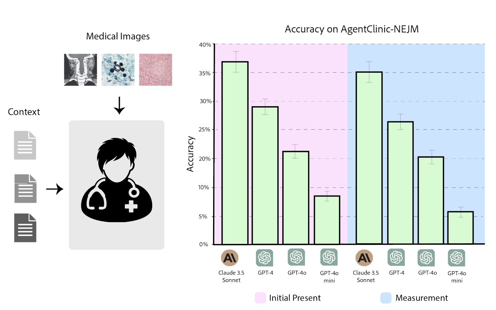

Evaluating large language models (LLM) in clinical scenarios is crucial to assessing their potential clinical utility. Existing benchmarks rely heavily on static question-answering, which does not accurately depict the complex, sequential nature of clinical decision-making. Here, we introduce AgentClinic, a multimodal agent benchmark for evaluating LLMs in simulated clinical environments that include patient interactions, multimodal data collection under incomplete information, and the usage of various tools, resulting in an in-depth evaluation across nine medical specialties and seven languages. We find that solving MedQA problems in the sequential decision-making format of AgentClinic is considerably more challenging, resulting in diagnostic accuracies that can drop to below a tenth of the original accuracy. Overall, we observe that agents sourced from Claude-3.5 outperform other LLM backbones in most settings. Nevertheless, we see stark differences in the LLMs' ability to make use of tools, such as experiential learning, adaptive retrieval, and reflection cycles. Strikingly, Llama-3 shows up to 92% relative improvements with the notebook tool that allows for writing and editing notes that persist across cases. To further scrutinize our clinical simulations, we leverage real-world electronic health records, perform a clinical reader study, perturb agents with biases, and explore patient-centric metrics that this interactive environment enables.
AgentClinic enables comprehensive benchmarking of LLMs as clinical agents. We evaluate a suite of state-of-the-art models across three settings: AgentClinic-MedQA performance based on doctor LLM, patient LLM, and AgentClinic-MIMIC-IV with real-world electronic health records. Claude-3.5 Sonnet achieves the highest diagnostic accuracy across settings, while human physicians perform comparably. The choice of patient agent LLM is a significant factor: performance varies substantially depending on which model simulates the patient.

Figure 2. Diagnostic accuracy across AgentClinic-MedQA (varying doctor and patient LLMs) and AgentClinic-MIMIC-IV (real-world EHR). Claude-3.5 Sonnet leads in most settings; the patient agent LLM significantly impacts doctor performance.
A core finding of AgentClinic is that static medical QA benchmarks dramatically overestimate clinical competence. When the same MedQA problems are presented in AgentClinic's sequential decision-making format, diagnostic accuracies drop substantially across all models, in some cases to below a tenth of the original accuracy. This gap highlights the importance of evaluating clinical AI in interactive, agent-based settings rather than relying on multiple-choice benchmarks alone.

Figure 3. Comparison of static MedQA accuracy (dashed) vs. AgentClinic-MedQA agentic accuracy (solid) across 11 LLMs. The sequential decision-making format reveals substantial performance drops for all models.
AgentClinic embeds 24 cognitive and implicit biases in both doctor and patient agents to study realistic clinical interactions. Introducing biases leads to large reductions in diagnostic accuracy for doctor agents and reduced compliance, confidence, and follow-up consultation willingness in patient agents. The radar charts reveal that implicit biases (e.g., racial, gender, socioeconomic) and cognitive biases (e.g., confirmation, recency, frequency) differentially impact performance across GPT-4 and Mixtral-8x7B.

Figure 4. Impact of cognitive and implicit biases on AgentClinic-MedQA. Top: radar charts of normalized accuracy under doctor biases (implicit and cognitive) and patient biases. Bottom: patient-centric metrics (confidence, compliance, consultation willingness) under each bias type.
AgentClinic provides evaluation across seven languages (AgentClinic-Lang), nine medical specialties (AgentClinic-Spec), and five agent tools (including experiential learning, adaptive RAG, reflection cycles, and a persistent notebook). Claude-3.5 leads in most languages and specialties, while tool effectiveness varies dramatically by model. Strikingly, Llama-3 shows up to 92% relative improvement with the notebook tool that allows writing and editing notes that persist across cases.

Figure 5. Diagnostic accuracy across languages (left), medical specialties (center), and agent tools (right) for six LLMs. Claude-3.5 dominates most axes; tool augmentation reveals stark model-dependent differences.
AgentClinic-NEJM evaluates LLMs on multimodal clinical cases from the New England Journal of Medicine case challenges, requiring agents to interpret medical images (radiology, pathology, dermatology) alongside dialogue. We compare performance at two stages: initial presentation and after measurement (imaging) data is provided. Claude-3.5 Sonnet again leads, but all models show notably lower accuracy on these challenging multimodal cases compared to text-only settings.

Figure 6. AgentClinic-NEJM multimodal benchmark. Left: the doctor agent receives medical images (radiology, pathology) alongside patient context. Right: accuracy at initial presentation vs. after measurement data, comparing Claude-3.5, GPT-4, GPT-4o, and GPT-4o-mini.
@article{schmidgall2026agentclinic,
title={AgentClinic: a multimodal benchmark for tool-using clinical AI agents},
author={Schmidgall, Samuel and Ziaei, Rojin and Harris, Carl and Kim, Ji Woong and Reis, Eduardo Pontes and Jopling, Jeffrey and Moor, Michael},
journal={npj Digital Medicine},
year={2026},
publisher={Nature Publishing Group},
doi={10.1038/s41746-026-02674-7},
url={https://www.nature.com/articles/s41746-026-02674-7}
}